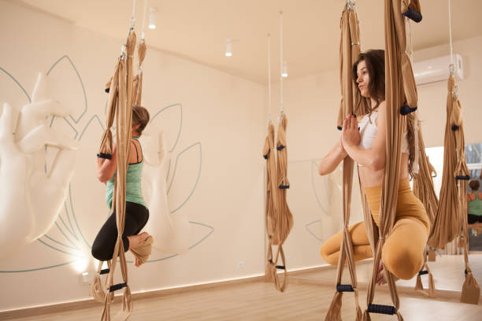

AEROYOGA: Combina posturas de yoga tradicionales, pilates y danza con el uso de una hamaca. Se trata de una variante muy física del yoga que va a permitir trabajar el cuerpo de una forma muy intensa, además de contar con el característico trabajo mental y espiritual propio de esta tradicional disciplina.